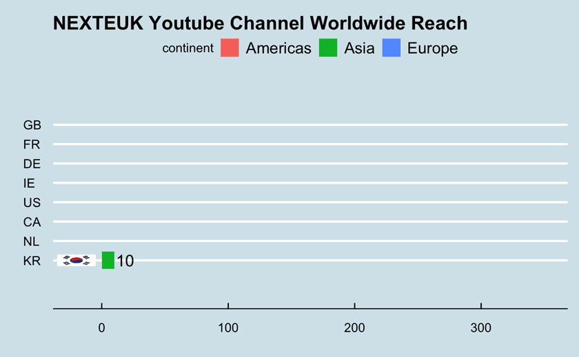
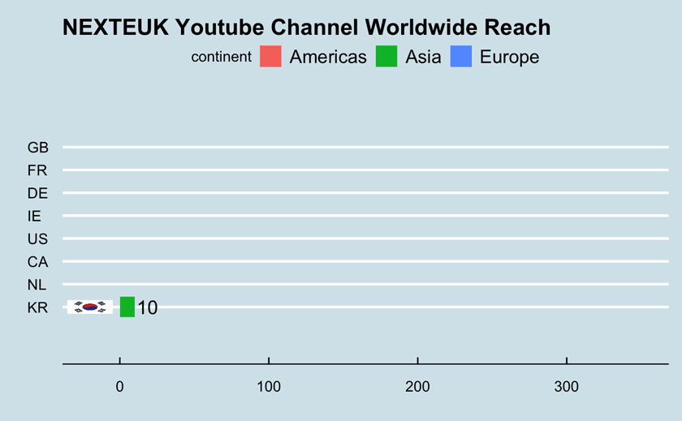

Summer School
NEXTEUK organised two Summer Schools offering an extensive range of lectures, resources, and advice provided by policymakers and leading international
scholars to early researchers and PhD candidates in the field of EU studies. The Summer School provided a multidisciplinary program with the objective
of honing participants’ academic and research skills.
NEXTEUK 2021 Summer School’s central research question, “Researching post-Brexit and (post-) Covid EU-UK Relations: What impact on Policies, Methods and Theories?”
addressed the methodological and theoretical tools to study the era of changes triggered by the UK withdrawal from the European Union. Due to the pandemic,
the Summer School happened entirely virtually in partnership with critical online pedagogy scholars from the University of Colorado (ThinqStudio).
NEXTEUK Summer School 2022 focused on the research agenda(s) for post-Brexit and post-Covid EU studies. It addressed how these events impact the EU’s
sovereignty and institutions, the state of trust within the Union, the concept of Europeanisation, and the politicization of European integration in those contexts.
As the restrictions regarding the pandemic loosened up, participants in the second Summer School had the chance to assist in person in Paris, where, in addition to
the two-day program at Queen Mary (rue de Constantine), they benefited from a two-day academic retreat at the Jean Monnet House in Bazoches.


 
